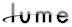

FacadeGreat for helping to make your deadlines, the Facade shader places virtual cardboard-cutouts in a scene, allowing you to replace complex geometry with simple 2D faces. Facade then "rotates" the cutout so that it faces the camera, lights, and reflective surfaces all at the same time. This way stretching in the image, shadows, and reflections is eliminated.
Facade's Size parameter sets the height of the facade image. Rotation controls how the facade is allowed to rotate: around the Y-axis only (Cylindrical). NOTE: The texture's scaling, rotation, and translation will all be overridden by the Facade shader.
 |